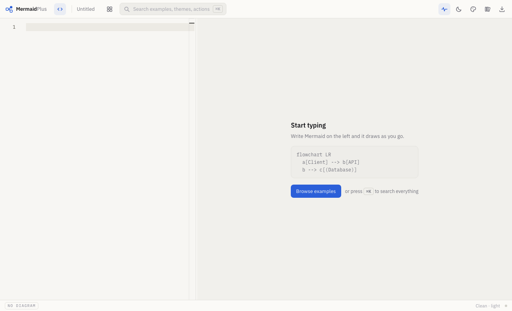
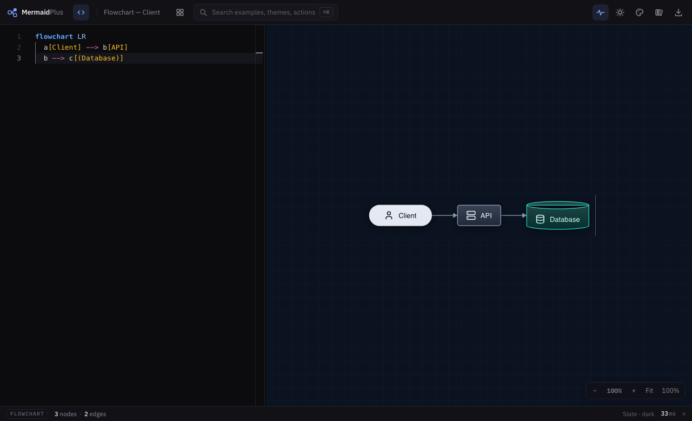
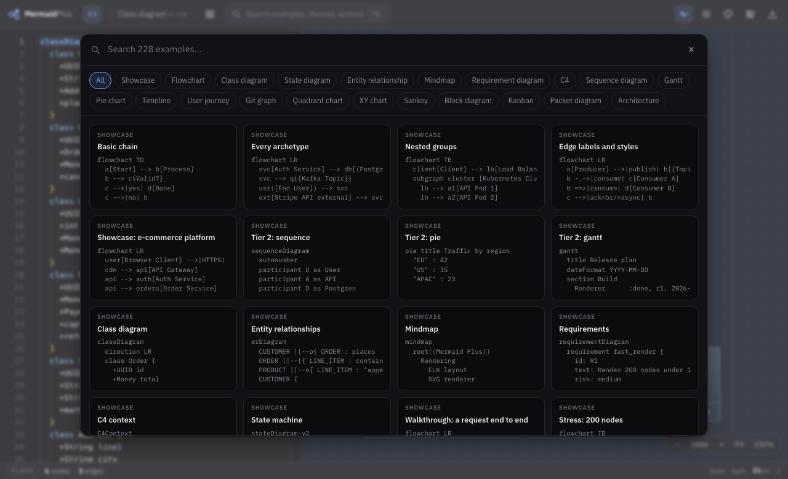

Chapter 1
Getting started
Three lines and you have a diagram. The page starts empty on purpose: arriving at somebody else's flowchart makes your first move "select all, delete".

Write three lines
Type on the left. The diagram appears as you go — an edit lands in about 65 milliseconds, so it keeps up with you.
flowchart LR a[Client] --> b[API] b --> c[(Database)]

That is ordinary Mermaid. Anything you already have — from GitHub, from a wiki, from a colleague — pastes in and renders. Twenty diagram kinds are supported, which is every kind Mermaid has.
Start from something real instead
There are 210 examples, all of them systems people actually build: OAuth with PKCE, a canary release, an incident timeline, a multi-tenant schema. Two ways in:
Press ⌘K and type what you are after —
auth,kubernetes,postmortem.Or click the grid icon in the toolbar to browse them by kind.

Getting back to blank. Library menu → New diagram, or ⌘K → New diagram. It asks first if there is anything to lose.
Your work is kept
The document you are editing is saved to this browser as you type, so closing the tab does not lose it. Save to library keeps a named copy. Both live in this browser only — there is nowhere else for them to go.